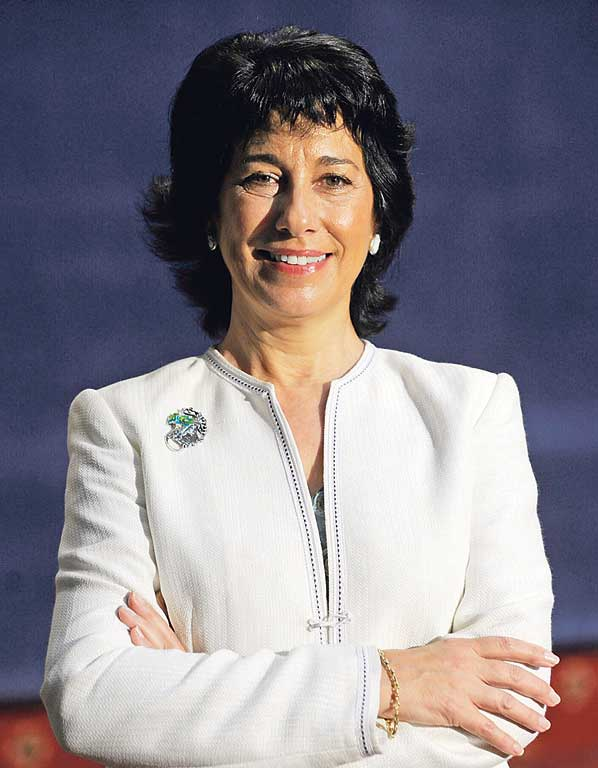

| BIOGRAFIA | Nace en Hobart, capital del estado australiano de Tasmania, hija de un matrimonio de médicos. | ||||||||||||||||||||
|---|---|---|---|---|---|---|---|---|---|---|---|---|---|---|---|---|---|---|---|---|---|
| ESTUDIOS | Bioquímica en la Universidad de Melbourne | Doctorado en Biología Molecular en 1975 por la Universidad de Cambridge | Estudia los telómeros en la Universidad de Yale en 1975, pasando a la Universidad de California en Berkeley. En 1984, descubre junto a Carol Greider la enzima telomerasa, y un año después, la aíslan. Es entonces cuando comienzan a crear telómeros artificiales con el fin de estudiar la división celular y así poder controlarla. En 1986 es nombrada directora de laboratorio, convirtiéndolo en líder mundial en la manipulación de la actividad, de la telomerosa en las células. En 1993 es nombrada directora del departamento de Microbiología e Inmunología. | ||||||||||||||||||
| LOGROS | En 2001, Elizabeth Blackburn ingresó en la Comisión de Bioética de los EE UU, pero se retiró en 2004 en desacuerdo con las restricciones que la administración de George W. | Elizabeth fue una de las primeras entre las bioquímicas y bioquímicos en estudiar los telómeros, junto a John Gall y Jack Szostak. | Los telómeros son los extremos de los cromosomas de las células eucariotas, necesarias tanto para la división celular como para mantener la integridad y la estabilidad de los cromosomas. La enzima telomerasa, quien forma los telómeros durante la duplicación del ADN, es quien pauta la vida de las células: cuanto menor sea la segregación de telomerasa, más cortos serán los telómeros, hasta llegar a un momento en que la división celular sea imposible y las células terminen muriendo. Por lo tanto, los telómeros están relacionados con el envejecimiento celular. | Blackburn y Greider también descubrieron que las células cancerosas, sin embargo, son capaces de seguir produciendo mayor cantidad de telomerasa, provocando la aparición de tumores. Este descubrimiento puede contribuir a encontrar sustancias, métodos o dianas eficaces para frenar la segregación de esta enzima y así ayudar en el tratamiento contra el cáncer. | |||||||||||||||||

En 1975 se licenció en Medicina y se diplomó en Psicología por la Universidad de Salamanca, entre 1976 y 1979 fue médica interna residente (MIR) y becaria predoctoral del Departamento de Patología General, Sección de Endocrinología, del Hospital Clínico, de la Universidad de Salamanca donde se doctoró en Medicina Interna y Endocrinología. Trabajó durante 10 años en Estados Unidos, primero como becaria postdoctoral (1980-1982) y luego como investigadora (1984-1991 y 1995-1996) en los National Institutes of Health(Bethesda) y en el Instituto de Tecnología de California (Caltech, Pasadena). En el período 1982-1984 fue Facultativo Adjunto, del Servicio de Endocrinología del Hospital de la Santa Cruz y San Pablo de Barcelona, al que continuo vinculada con la supervisión de proyectos de investigación hasta 1989. En el año 1991 regresó a España como Investigadora Científica del Centro de Investigaciones Biológicas (CIB) del Consejo Superior de Investigaciones Científicas (CSIC) en Madrid. Entre 2007 y 2008 fue Directora General del Instituto de Salud Carlos III. En la actualidad es Profesora de Investigación del (CSIC) en el Departamento de Biomedicina Molecular del CIB. En 2001 fue una de las fundadoras de la Asociación de Mujeres Investigadoras y Tecnólogas de la que fue su primera presidenta (2001-2007). A menudo ha manifestado su preocupación por la falta de reconocimiento del trabajo de las mujeres en los ámbitos científicos y tecnológicos, así como su poca presencia en los puestos relevantes y en la toma de decisiones, y así lo ha hecho público en la prensa y en diversos artículos de divulgación. En 1991 creó el grupo de investigación Factores de Crecimiento en el Desarrollo de Vertebrados, que en 2007 pasó a llamarse Laboratorio 3D: desarrollo, diferenciación, degeneración. Su investigación ha estado siempre relacionada con la biología celular y molecular, el desarrollo embrionario, insulina y factores de crecimiento, así como con neurogénesis. En el grupo que dirige se ha estudiado especialmente el papel de la Proinsulina/insulina en el desarrollo del sistema nervioso central, abordando los problemas biológicos básicos en sistemas modelo del desarrollo, con el objetivo de entender los mecanismos que subyacen a la formación de varios tejidos. Utilizando diversos vertebrados (pollo, ratón) y células pluripotentes, estudian los mecanismos fisiológicos de regulación de la proliferación, la diferenciación, la competición y la muerte celulares, así como su desregulación en situaciones patológicas. En particular, han planteado la posible traslación biomédica de sus observaciones en modelos de degeneración del sistema nervioso, incluyendo degeneraciones retinianas y, más recientemente, la enfermedad de Alzheimer.
Flora de Pablo, juntamente con miembros del grupo que lidera, fundó la empresa de base tecnológica Proretina Therapeutics constituida en Madrid en julio de 2007, spin-off del CIB, en colaboración con las Universidades de Barcelona y Alcalá de Henares, que inició el desarrollo de una posible terapia aplicable en clínica aunque la falta de inversores llevó al cierre de la empresa en 2018.